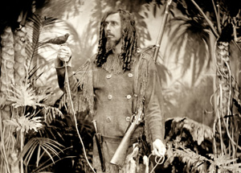

Exposed: Today’s Photography/Yesterday’s Technology
|
 |
Opening in July, Exposed: Today’s Photography/Yesterday’s Technology, an exhibition that celebrates the art of collaboration and manipulation of old and new technologies in photography.
The introduction of the digital camera over 20 years ago revolutionized photography. For novices and professionals alike, the computer has replaced the darkroom in the 21st century. However, even with the sophisticated advances of the digital age, a growing number of artists are embracing 19th century photographic technologies to make their work. Paradoxically, technology has greatly contributed to the enthusiasm, interest and renewal of antiquated photographic processes. Many artists utilize digital tools along with historic practices to make hybrid works.
Digital printing enables artists to create large negatives for contact printing and play with scale in ways that were previously unavailable. Active online communities provide a forum to share recipes and practices.
Part chemist, artist, historian and experimentalist, the photographers in this show share an interest in utilizing old technology to create new imagery. Exhibiting artists include: Stephen Berkman, Linda Connor, Binh Danh, Nathaniel Gibbons, Joy Goldkind, Andreas Hablutzel, Rachel Heath, Robin Hill, Kerik Kouklis, Chirs McCaw, Beth Moon, Ben Nixon, Ron Moultrie Saunders, Michael Shindler, and Brian Taylor.
San
Jose Institute of Contemporary Art 560 South First Street San Jose, CA 95113 tel (408) 283-8155 fax (408) 283-8157 |